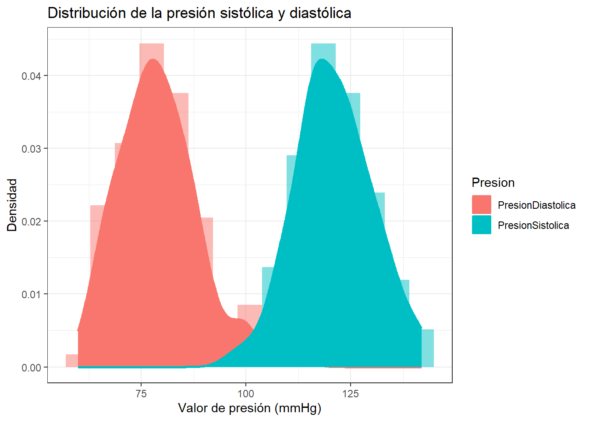
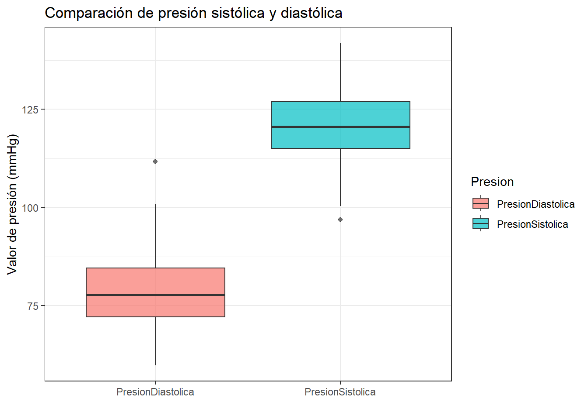

9 Comparación de presión sistólica vs. diastólica
9.4 Verificación de datos faltantes
## # A tibble: 1 × 2
## NA_Presion NA_Valores
## <int> <int>
## 1 0 0Como todos los conteos dan 0, no es necesario imputar.
9.5 Resumen exploratorio
df %>%
group_by(Presion) %>%
summarise(n = length(Valores),
prom = mean(Valores),
ds = sd(Valores),
mediana = median(Valores),
Q1 = quantile(Valores, 0.25),
Q3 = quantile(Valores, 0.75),
RIC = IQR(Valores),
min = min(Valores),
max = max(Valores),
coeficienteasimetria = skewness(Valores),
curtosis = kurtosis(Valores))## # A tibble: 2 × 12
## Presion n prom ds mediana Q1 Q3 RIC min max coeficienteasimetria curtosis
## <fct> <int> <dbl> <dbl> <dbl> <dbl> <dbl> <dbl> <dbl> <dbl> <dbl> <dbl>
## 1 PresionDiastolica 100 78.9 9.48 77.8 72.1 84.6 12.4 59.9 112. 0.639 3.66
## 2 PresionSistolica 100 121. 9.13 121. 115. 127. 11.9 96.9 142. 0.0605 2.84La presión diastólica presenta un promedio de 78.9 mmHg (DS = 9.48), con una mediana de 77.8 mmHg (RIC = 12.4, Q1 = 72.1, Q3 = 84.6) y una asimetría positiva leve (0.64). La presión sistólica presenta un promedio de 121 mmHg (DS = 9.13), con una mediana de 121 mmHg (RIC = 11.9, Q1 = 115, Q3 = 127) y una asimetría prácticamente nula (0.06), lo que sugiere una distribución muy simétrica.
9.5.1 Histograma comparativo
df %>%
ggplot(aes(x = Valores, fill = Presion)) +
geom_histogram(aes(y = after_stat(density)), alpha = 0.5, position = "identity", bins = 15) +
geom_density(aes(color = Presion), linewidth = 1) +
labs(title = "Distribución de la presión sistólica y diastólica",
x = "Valor de presión (mmHg)", y = "Densidad") +
theme_bw()
El histograma muestra dos distribuciones bien diferenciadas y con poco solapamiento: los valores de presión diastólica se concentran alrededor de 70-90 mmHg, mientras que los de presión sistólica se concentran alrededor de 110-130 mmHg, ambas con forma aproximadamente acampanada (simétrica).
9.5.2 Boxplot comparativo
df %>%
ggplot(aes(x = Presion, y = Valores, fill = Presion)) +
geom_boxplot(alpha = 0.7) +
labs(title = "Comparación de presión sistólica y diastólica",
x = "", y = "Valor de presión (mmHg)") +
theme_bw()
El boxplot confirma que las cajas de ambos grupos no se solapan, evidenciando visualmente una diferencia clara entre los niveles típicos de ambas variables, sin presencia notable de valores atípicos en ninguno de los dos grupos.
9.6 Supuesto de normalidad
##
## Asymptotic one-sample Kolmogorov-Smirnov test
##
## data: scale(dfs)
## D = 0.058097, p-value = 0.8884
## alternative hypothesis: two-sided##
## Asymptotic one-sample Kolmogorov-Smirnov test
##
## data: dfs
## D = 0.058097, p-value = 0.8884
## alternative hypothesis: two-sided##
## Asymptotic one-sample Kolmogorov-Smirnov test
##
## data: scale(dfd)
## D = 0.057927, p-value = 0.8905
## alternative hypothesis: two-sided##
## Asymptotic one-sample Kolmogorov-Smirnov test
##
## data: dfd
## D = 0.057927, p-value = 0.8905
## alternative hypothesis: two-sidedSe aplicó la prueba de Kolmogorov-Smirnov para evaluar el supuesto de normalidad de cada grupo, planteando \(H_0\): los datos siguen una distribución normal, frente a \(H_1\): los datos no siguen una distribución normal. Para la presión sistólica se obtuvo \(D=0.058\) y un valor-p \(=0.888\); para la presión diastólica, \(D=0.058\) y un valor-p \(=0.891\). En ambos casos, al ser el valor-p muy superior a \(\alpha=0.05\), no se rechaza \(H_0\), por lo que se concluye que ambas variables son consistentes con una distribución normal.
9.7 Supuesto de homocedasticidad
##
## F test to compare two variances
##
## data: dfs and dfd
## F = 0.92784, num df = 99, denom df = 99, p-value = 0.7102
## alternative hypothesis: true ratio of variances is not equal to 1
## 95 percent confidence interval:
## 0.6242897 1.3789878
## sample estimates:
## ratio of variances
## 0.9278405Se evaluó el supuesto de homogeneidad de varianzas mediante la prueba F, planteando \(H_0: \sigma^2_{\text{sistólica}} = \sigma^2_{\text{diastólica}}\) frente a \(H_1: \sigma^2_{\text{sistólica}} \neq \sigma^2_{\text{diastólica}}\). Se obtuvo \(F=0.928\) (\(gl_1=99\), \(gl_2=99\)), con un valor-p \(=0.710\), y un intervalo de confianza del 95% para la razón de varianzas de \((0.624,\ 1.379)\), el cual contiene al valor 1. Como el valor-p es mayor que \(\alpha=0.05\), no se rechaza \(H_0\). Por lo tanto, las varianzas de ambos grupos son estadísticamente iguales, lo que justifica utilizar var.equal = TRUE en la prueba t posterior.
9.7.1 Demostración de var.test paso a paso
n1 <- length(dfs)
n2 <- length(dfd)
s1 <- mean((dfs-mean(dfs))^2)/ (n1-1)
s2 <- mean((dfd-mean(dfd))^2)/ (n2-1)
#Estadistico de Fisher
F0 <- s1/s2
F0## [1] 0.9278405## [1] 0.7101778#Intervalos de confianza
alpha = 0.05
int_inf = (s1/s2) * (1/qf(1-alpha/2, df1, df2))
int_sup = (s1/s2) * (1/qf(alpha/2, df1, df2))
int_inf## [1] 0.6242897## [1] 1.3789889.8 Verificación con t.test()
##
## Two Sample t-test
##
## data: dfs and dfd
## t = 31.888, df = 198, p-value < 2.2e-16
## alternative hypothesis: true difference in means is not equal to 0
## 95 percent confidence interval:
## 39.36328 44.55275
## sample estimates:
## mean of x mean of y
## 120.90406 78.94604Planteando \(H_0: \mu_{\text{sistólica}} = \mu_{\text{diastólica}}\) frente a \(H_1: \mu_{\text{sistólica}} \neq \mu_{\text{diastólica}}\), con \(\alpha=0.05\), se obtuvo \(t=31.888\) con 198 grados de libertad y un valor-p \(<2.2\times10^{-16}\). El intervalo de confianza del 95% para la diferencia de medias es \((39.36,\ 44.55)\), el cual no contiene el cero. Como el valor-p es muchísimo menor que \(\alpha\), se rechaza \(H_0\). Por lo tanto, existe evidencia estadística contundente de que la presión arterial sistólica promedio (\(\bar{x}=120.9\) mmHg) es significativamente distinta y, específicamente, mayor que la presión arterial diastólica promedio (\(\bar{y}=78.9\) mmHg).
9.8.1 Verificación de t.test manual
n1 <- length(dfs)
n2 <- length(dfd)
s1 <- sum((dfs-mean(dfs))^2) / (n1-1)
s2 <- sum((dfd-mean(dfd))^2) / (n2-1)
vcombinada <- ((n1-1)*s1 + (n2-1)*s2)/ (n1+n2-2)
t = (mean(dfs) - mean(dfd))/ sqrt(vcombinada*(1/n1 + 1/n2))
gl <- n1 + n2 - 2
t_crit <- qt(1 - 0.05/2, df = gl)
p_valor <- 2 * pt(abs(t), df = gl, lower.tail = FALSE)
error_estandar <- sqrt(vcombinada*(1/n1 + 1/n2))
IC_inf <- (mean(dfs)-mean(dfd)) - t_crit*error_estandar
IC_sup <- (mean(dfs)-mean(dfd)) + t_crit*error_estandar
vcombinada## [1] 86.56337## [1] 31.88841## [1] 198## [1] 1.972017## [1] 1.315776## [1] 39.36328## [1] 44.552759.9 Tamaño del efecto
##
## Cohen's d
##
## d estimate: 4.509702 (large)
## 95 percent confidence interval:
## lower upper
## 3.984821 5.034583El tamaño del efecto, medido mediante \(d\) de Cohen, fue de \(4.51\) (IC 95%: \(3.98\)–\(5.03\)), clasificado como un efecto grande. Esto indica que, más allá de la significancia estadística (que solo indica que existe una diferencia), la magnitud real de esa diferencia entre la presión sistólica y diastólica es muy sustancial en términos prácticos y clínicos.